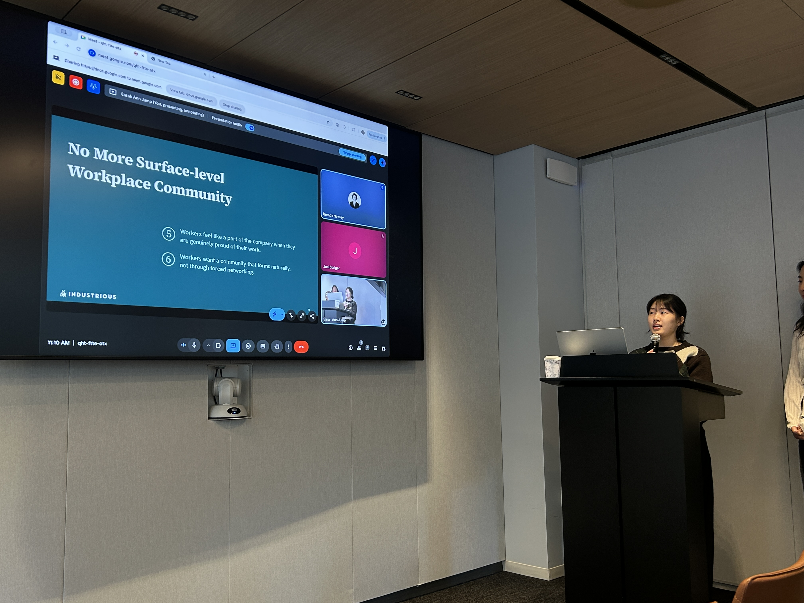
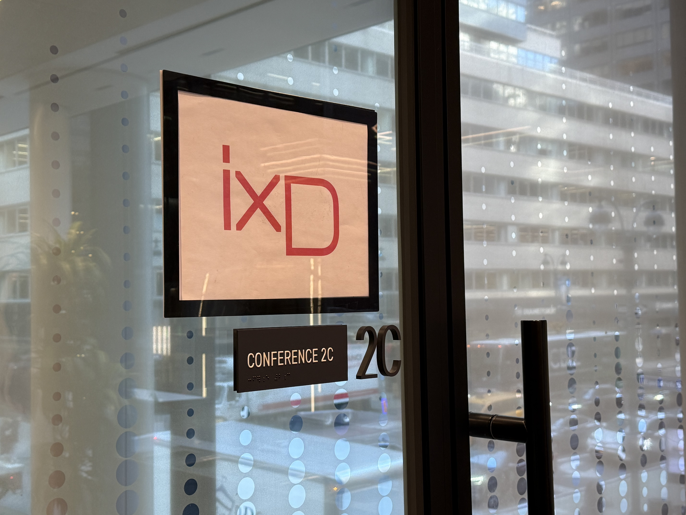

Engaging the Unengaged
A field study and design framework for Industrious that reimagines a human-centered coworking space over a productivity-centered one.
✦ Client project presented at Industrious 730 Third Avenue, New York City
"There was no space to just be away from work. You always had to be in it." — P1
Challenges
Some members were consistently disengaging, and the easy explanations did not hold up.
Industrious already does a lot right. Flexible spaces, curated events, community managers, human-centered hospitality. On paper, it is one of the best coworking experiences available.
But some members still disengage. They show up less. They skip events. They keep to themselves. The easy assumption is that these are introverted people, or people who simply prefer to work alone.
Industrious suspected otherwise. Their own internal hypothesis stated it clearly: "We are missing some people by only doing big social events." The question was who those people were, and what they actually needed.
Reframing the Unengaged
The members who disengaged were not choosing isolation. The space had simply never been designed for how they actually work.
Coworking spaces are built around a single image of what a productive worker looks like: focused, social, always on. But people do not actually work that way. They need to rest. They need privacy. They need to connect on their own terms. When a space does not make room for that, certain members quietly stop engaging, not because they do not care, but because the space was not built for them.
This reframe changed the direction of the entire project.

Research
Desk research, a site visit, and in-depth interviews with members across working styles and backgrounds.
The team conducted desk research and a competitive analysis of the coworking industry, a site visit to Industrious's 730 Third Avenue location in New York City, a pre-interview survey, and in-depth interviews with coworking members. Findings were synthesized through affinity mapping into six insights across three themes.


What We Found
Feeling Human: Workers come to the office for productivity, but they cannot be "on" all the time. Rest is not the opposite of work. It is part of it. And personal connections matter more than professional ones. A colleague who notices you are having a rough day means more than a scheduled networking event.
Autonomy Through the Workday: People work differently. Some need silence. Some need ambient noise. Some need to spread out. When a space does not accommodate that range, people spend energy adapting instead of working. Autonomy is what makes the space actually usable for everyone.
No More Surface-Level Community: Members do not avoid each other. They avoid interactions that feel performative or draining. What actually builds community is everyday, low-stakes moments: a shared kitchen, a familiar face, a conversation nobody had to sign up for.
Redesigned Experience
01 People
Shift how staff relate to members.
TXM as Facilitators: Shift the role of space managers from event organizers to human connectors. Simple internal guidelines for genuine check-ins and small gestures that make members feel seen.
Celebrate Individual Wins: Small notes or app notifications after meetings or at the end of the day that build emotional value over time.
02 Space
Design the physical environment to support the full range of how people work.
Micro Prompts for Pause and Recharge: Tent cards and subtle visual cues placed in daily-routine spots, kitchens, elevator areas, hallway corners, that invite people to pause without pressure.
Multi-purpose Resting Room: A reservable space for napping, meditation, or quiet personal time. Designed to normalize rest during the workday without stigma.
Focus Indicators: Simple signals that let members communicate when they are in deep focus. Cozy nooks, informal layouts, and room to spread out without feeling watched.
03 Events
Build community through shared achievements and better-designed gatherings.
Celebrate Company Wins: Share tenant company achievements on lobby screens and in-app banners to build collective pride across the space.
Event Design Guidelines: A clear framework for what kinds of events actually work. Hands-on, interest-based, low-stakes. Cooking classes, candle making, snack tastings. Not wine and business cards.
Reflections
Challenges
- Reaching disengaged members for interviews: the most useful voices are often the quietest
- Avoiding the bias toward designing for the visible, social members we could easily observe in the space
- Translating emotional research insights into tangible, low-cost spatial and operational changes
Accomplishments
- Developed a reframe that shifted the entire direction of the project
- Seven recommendations prioritized by cost and impact, ready for immediate consideration
- Presented directly to Industrious staff at 730 Third Avenue, New York City
Learnings
- Designing for the unheard requires actively seeking out people who are not already in the room
- A space communicates what kinds of people it values. When rest and privacy are not designed in, the message is clear
- Community is built in small moments, not big events
"More events is not always the answer. Sometimes the space itself is the message."